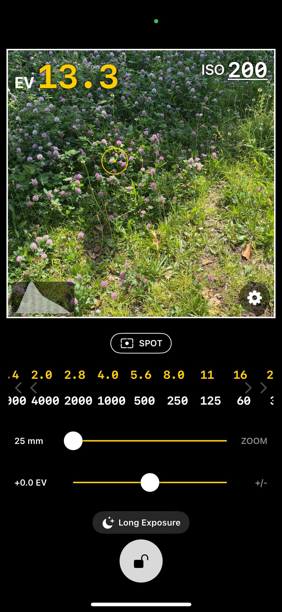
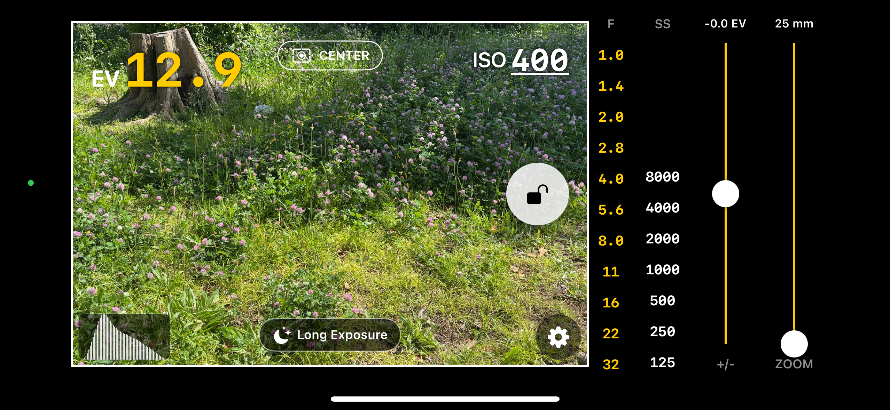

Precision Light Meter for iOS
Know the light. Nail the exposure.
フィルムカメラとマニュアルレンズのための
精密な露出計アプリ
Precision Light Meter for iOS
フィルムカメラとマニュアルレンズのための
精密な露出計アプリ


Features
サブスクなし。広告なし。カメラを構えるたびに頼れる、ただ一つのツール。
Average / Center / Spot をワンタップで切り替え。Spotモードでは画面上の任意の点をタップするだけで、そこを正確に測光。迷いなく、必要な露出データを即座に取得できます。

Spotモードでは、ライブビュー上の任意の点をタップするだけでその場所を正確に測光。複雑な光の条件でも、撮りたい被写体だけに絞り込んだ露出データをワンタップで取得できます。

現在のEV値に対応する、絞りとシャッタースピードの全組み合わせを横並びで表示。数秒で最適な設定を見つけ、撮影スタイルに合ったものを即座に選択できます。

直感的なスライダーで露出補正を調整。最小0.1EV刻みに加え、0.2 / 0.3 / 0.5EV刻みも選べます。ズームに連動して換算焦点距離をmm表示するので、お使いのマニュアルレンズに画角を合わせたまま測光できます。

画面をロックして、じっくり構図を決める。Exposirはセカンドビューファインダーとして機能し、シャッターを切る前に考える余裕を与えます。赤いロックアイコンでロック状態を一目確認。

ND2〜ND1000のNDフィルターに対応した正確なシャッタースピードを自動計算。内蔵タイマーがカウントダウンし、一時停止・再開・露光完了通知まで完全サポート。

ホーム画面またはロック画面にウィジェットを追加して、光の瞬間を逃さずすぐに起動。探す手間も遅延もなく、タップ一つで撮影準備完了。

Exposirを自分好みに調整しましょう。EV補正のステップ幅、背景色やライブフレームの色、絞り値やシャッタースピードの色分けなど、設定画面から自由にカスタマイズできます。

Screenshots
暗所でも視認しやすいダークデザイン。直感的な操作で、撮影に集中できます。


What's New
カメラプレビューにリアルタイムの輝度ヒストグラムを追加しました。露出の分布を一目で確認できます。
長時間露光タイマーがDynamic Islandと連携し、アプリがバックグラウンドの際もタイマーの状態を確認できます。
EV補正が有効な状態でロックした際も、カメラプレビューがライブ表示されるように改善しました。
Support
バグ報告・機能リクエスト・その他ご質問はこちらから。
個人情報の取り扱いについて
サービス利用条件